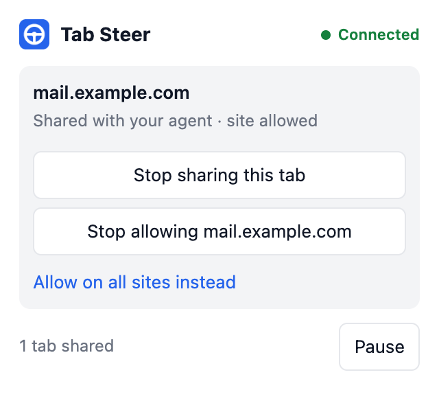

Hand your coding agent a tab, not your browser.
Tab Steer lets AI coding agents read and act on pages in your real, logged-in Chrome. They reach only the tabs you share and the sites you allow, and you can pause them with one click.
$ tabsteer open news.ycombinator.com Opened tab 1853312301 $ tabsteer read # Hacker News [new](newest) @kq2 | [past](front) @kq3 | ... $ tabsteer click @kq2 Clicked link "new" @kq2
Works with any agent that can run a command
Claude Code, Antigravity, Codex, Cursor, or a plain shell script. There is no server to configure and nothing added to the model's context until a command is actually run.
Share a tab
Click the Tab Steer icon on a tab and share it. Shared tabs sit in a visible tab group, so you always know what the agent can reach.
The agent reads it
tabsteer read returns the page as compact Markdown. Every link, button and field carries a short reference.
The agent acts
It clicks, types and waits by reference, so it acts on exactly the element it read. Unclear targets are refused, never guessed.
Built around limits you control
An agent in your logged-in browser acts as you. Tab Steer starts with no access and keeps every control in your hands, inside the browser, where the agent cannot change it.
- Shared tabs only. Drag a tab into the group to share it, drag it out to stop.
- Allowed sites only. The extension installs with access to no sites. You grant each one.
- One-click pause. Every command stops until you resume.
- Nothing listening on the network. The tool talks to the browser over a private local socket.
- Passwords stay hidden. Password and payment field values are never returned.
- No tracking. Nothing is collected or sent anywhere. Privacy policy.

Install
Requires Node.js 18 or newer. Tab Steer is at an early 0.1 release and is loaded as an unpacked extension for now.
$ git clone https://github.com/faysalmehmood/tabsteer.git $ cd tabsteer && ./install.sh $ tabsteer doctor
Use it responsibly
Some websites prohibit automated access in their terms and may restrict accounts that use it. You are responsible for the sites you point Tab Steer at. It has no features for evading bot detection, and none will be added. Read the threat model before using it on accounts that matter.